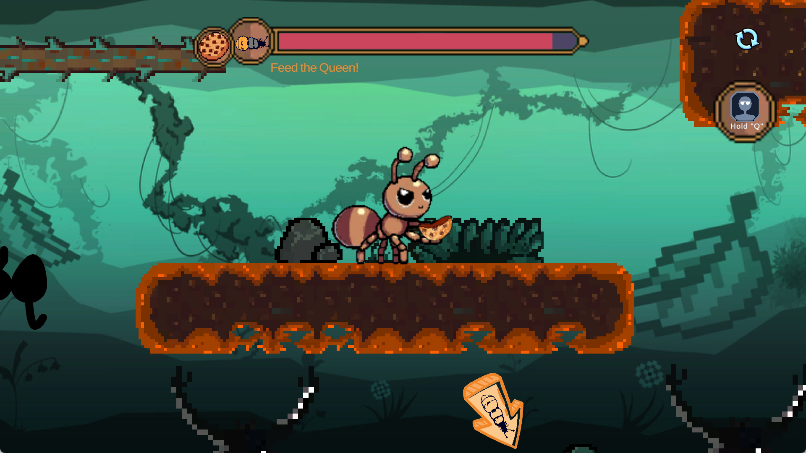
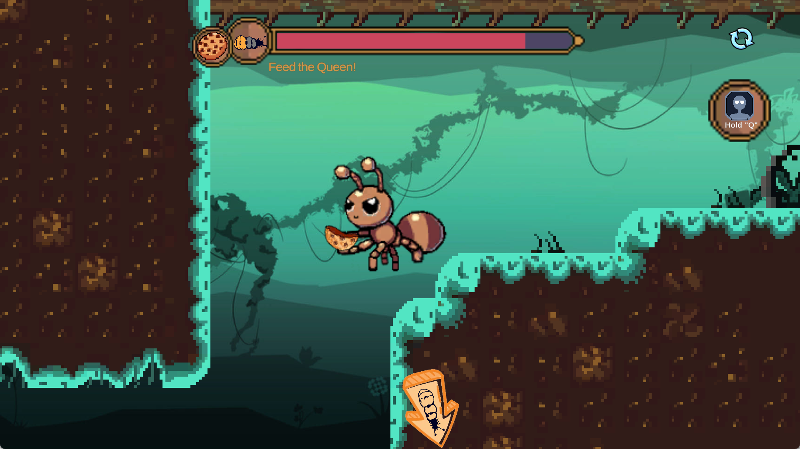

Terrarium
GMTK Game Jam 2024 · Built to Scale

Project Overview
Terrarium is a 2D platformer. The player controls a worker ant searching a terrarium for food requested by the queen, crossing obstacles and safely delivering the food. Platform movement, route judgment, and environmental hazards form the level's primary challenges.
My Contributions
- Level Tilemap: I created the map Tilemap and assembled the visual level layout.
- Foreground, Midground, and Background: I painted all three layers to establish spatial depth.
- Animation: I created selected enemy animations and hand animations.
Visual and Level Communication
Tilemap and Platform Routes
The Tilemap provides both platform collision and visual composition. Platform edges, landing points, and obstacle silhouettes must remain clear so the player can read routes quickly while moving and jumping.
Foreground, Midground, and Background Layering
The foreground, midground, and background establish the terrarium's depth. Differences in value and detail prevent the background from interfering with the readability of playable platforms and enemies.
Character and Enemy Animation
Enemy and hand animations strengthen action feedback, helping the player understand attacks, damage, and dynamic events in the scene.
Style Consistency
Platforms, background layers, and animation must share a consistent pixel density, silhouette language, and color relationship so content produced by different team members forms one cohesive scene.
Game Screenshots




The images above are from the project's public itch.io page.